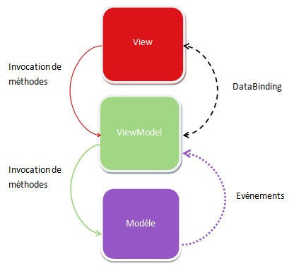

Tour d'horizon AngularJS
par Julien André
Bonjour à tous et merci pour votre présence,
Je me présente Je m'appelle Julien
Je suis dévelopeur WEB chez trepia depuis 2011
Pôle PHP symfony, j'ai travaillé pas mal sur différentes techno JS au cours de différentes missions.
Je vais tenter de vous faire faire un tour dans angularJs 1.
C'est une techno avec laquelle j'ai travaillé pendant 6 ou 7 mois sur ma mission actuelle que j'ai commencé en mai 2015.
Sommaire
- Petite histoire
- AngularJs
- SPA, single page application
- Des liens pour commencer
- Les grandes lignes
- Angular 2, fin de vie et migration
Petite histoire
- Première version des fondateur
- La communeauté s'y met
- Google s'y met
angular a fait ses début en 2009 dans le but de dépasser les limites de GWT par
Miško Hevery et Adam Abronsw et Igor Minar
le framework est rendu open source
Le framework est adopté par google, ça fait le buzz, tout le monde s'y met
AngularJs
- Cadriciel
- MVVM
- Exemple MVVM 3D
- Exemple MVVM avec AngularJS
- Angular 2
- Coexistence d'AngularJs et Angular 2
AngularJs est un framework js, et non une lib.
On peut le comparer à emberJs ou backbone ou d'autre mais pas à jquery.
Par Framework on entend un cadre d'élaboration d'une application séparant les composant de cette application en des endroits spécifiques.
Angular est dit MVW pour le fun, mais il est en fait très MVVM
MVVM, model view view model est un patron de conception selon lequel les modifcation de modele métier, entités.. dataObject impact la vue
et les modification de vue impact le modele
ces repercussions de modifications se font par un lien qui est la vue de modèle
Il y a d'autres MVVM par exemple un éditeur de modele 3D, vous en avez tous vue ou utilisez.
On a une tasse en 3D fil de fer, si les coordonnées des points change ou la texture, et bien ça change dans l'editeur.
Inversement si on modifie via l'editeur les cordonnées des points de la tasse, alors on change le modèle.
Angular 2 est un autre framework, Ce n'est pas angularJS 2 mais angular 2 car on y parle le typescript
Il y a de grande chance qu'AngularJs soit en fin de vie et que tout l'investissement, tant financier qu'émotionnele soit en quasi pure perte à moyen terme
Toutefois il est probable aussi qu'un certain nombre de application web écrite en angularJS continuent à être maintenue ou migrer vers un autre framework client.
Il est donc necessaire pour proceder au maintiens et à la migration des web app angularJS de connaitre un minimum ce framework.
google propose un certain nombre de méthodologie et de librairie facilitant la migration vers angular 2
Voici les documents qui peuvent être illisible pour certains d'entre vous
Pour commencer
Les grandes lignes
- router de base
- scope
- rootScope
- Les formulaires angularJS
- route
- La résolution d'une route
- factory, service
- controller
- variable de scope
- variable du controller
- watch
- watchGroup
- event
- la transclusion
- directives angular
- créer ses propres directive
- injection
- view, template
AngularJS et les autres
- jquery est une librairie
- Les librairies ne sont pas incompatibles avec AngularJS
- Ember backbone